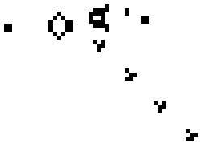

How to Create Generative Art In Less Than 100 Lines Of Code
Generative art, like any programming topic, can be intimidating if you’ve never tried it before. I’ve always been interested in it because I love finding new ways that programming can be utilized creatively. Furthermore, I think anyone can appreciate the concept of artwork that literally creates itself.
What is generative art?
Generative art is the output of a system that makes its own decisions about the piece, rather than a human. The system could be as simple as a single Python program, as long as it has rules and some aspect of randomness.
With programming, it’s pretty straightforward to come up with rules and constraints. That’s all conditional statements are. Having said that, finding ways to make these rules create something interesting can be tricky.

Conway's Game of Life
The [Game of Life](https://en.wikipedia.org/wiki/Conway%27s_Game_of_Life) is a famous set of four simple rules that determine the "birth" and "death" of each cell in the system. Each of the rules play a part in advancing the system through each generation. Although the rules are simple and easy to understand, complex patterns quickly begin to emerge and ultimately form fascinating results.
Rules may be responsible for creating the foundation of something interesting, but even something as exciting as Conway's Game of Life is predictable. Since the four rules are the determining factors for each generation, the way to produce unforeseeable results is to introduce randomization at the starting state of the cells. Beginning with a random matrix will make each execution unique without needing to change the rules.
The best examples of generative art are the ones that find a combination of predictability and randomness in order to create something interesting that is also statistically **irreproducible**.
## Why should you try it?
Not all side projects are created equal, and generative art may not be something you're inclined to spend time on. If you decide to work on a project however, then you can expect these benefits:
* **Experience** - Generative art is just another opportunity to hone some new and old skills. It can serve as a gateway to practicing concepts like algorithms, data structures, and even new languages.
* **Tangible Results** - In the programming world we rarely get to see any thing physical come out of our efforts, or at least I don't. Right now I have a few posters in my living room displaying prints of my generative art and I love that programming is responsible for that.
* **Attractive Projects** - We've all had the experience of explaining a personal project to someone, possibly even during an interview, without an easy way to convey the effort and results of the project. Generative art speaks for itself, and most anyone will be impressed by your creations, even if they can't fully understand the methods.
## Where should you start?
Getting started with generative art is the same process as any project, the most crucial step is to come up with an idea or find one to build upon. Once you have a goal in mind, then you can start working on the technology required to achieve it.
Most of my generative art projects have been accomplished in Python. It's a fairly easy language to get used to and it has some incredible packages available to help with image manipulation, such as [Pillow](https://pillow.readthedocs.io/en/5.3.x/) and [PyCairo](https://pycairo.readthedocs.io/en/latest/).
Luckily for you, there's no need to search very far for a starting point, because I've provided some code down below for you to play with.
## Sprite Generator
This project started when I saw a post showing off a sprite generator written in Javascript. The program created 5x5 pixel art sprites with some random color options and its output resembled multi-colored space invaders.
I knew that I wanted to practice image manipulation in Python, so I figured I could just try to recreate this concept on my own. Additionally, I thought that I could expand on it since the original project was so limited in the size of the sprites. I wanted to be able to specify not only the size, but also the number of them and even the size of the image.
Here's a look at two completely different outputs from the solution I ended up with:

9x9

37x37
These two images don't resemble each other at all, but they're both the results of the same system. Not to mention, due to the complexity of the image and the **randomness** of the sprite generation, there is an extremely high probability that even with the same arguments, these images will forever be one of a kind. I love it.
If you want thousands of examples of how diverse the results can be, check out [this twitter bot](https://twitter.com/generatorsprite) I set up on a Raspberry Pi that makes a new post every 20 minutes.
{% twitter 1138160180213030913 %}
## The Environment
If you want to start playing around with the sprite generator, there's a little foundation work that has to be done first.
Setting up a proper environment with Python can be tricky. If you haven't worked with Python before, you'll probably need to download [Python 2.7.10](https://www.python.org/download/releases/2.7/). I plan to eventually update this tutorial for Python 3+ as 2.7 becomes deprecated.
Dependency issues happen a lot with Python projects. If you start running into problems, you can do what I did and set up a [virtual environment](https://packaging.python.org/guides/installing-using-pip-and-virtual-environments/). Last but not least, make sure you have Pillow installed as well.
Once you have the environment set up, you can copy my code into a file with extension .py and execute with the following command:
` python spritething.py [SPRITE_DIMENSIONS] [NUMBER] [IMAGE_SIZE] `
Something **very important** to note is that the sprite dimensions must be an **odd number**. The reason behind that is the way that symmetry is handled, which will make more sense as you dig into the implementation.
## The Code
{% gist https://gist.github.com/erdavids/ba72d00d2dc4d04f6765cf4a6460ed5a %}
This solution is a long way from perfect, but it shows that creating generative art doesn't take a ton of code. I'll try my best to explain the key pieces.
The **main** function starts by creating the initial image and determining the size of the sprites. The two for loops are responsible for defining a border for each sprite, basically dividing the dimensions of the image by the number of sprites requested. These values are used to determine the coordinates for each one.
Let's ignore padding and take a look at the image below. Imagine that each of the four squares represents a sprite with a size of 1. The border that is being passed to the next function refers to the top left and bottom right coordinates. So the tuple for the top left sprite would be (0,0,1,1) whereas the tuple for the top right would be (1,0,2,1). These will be used as the dimensions and base coordinates for the squares of each sprite.

Example of determining sprite borders
The function **create_invader** determines the border for each square within the sprite. The same process for determining the border is applied here and represented below, only instead of the full image we're using a pre-determined border to work inside. These final coordinates for each square will be used in the next function to actually draw the sprite.

Breaking down a 3x3 sprite
To determine the color, a simple array of three random RGB tuples and three blacks are used to simulate a 50% chance of being drawn. The lambda functions near the top of the code are responsible for generating the RGB values.
The real trick of this function is creating symmetry. Each square is paired with an element value. In the image below you can see the element values increment as they reach the center and then decrement. Squares with matching element values are drawn with the same color.

Element values and symmetrical colors for a row in a 7x7 sprite
As **create_square** receives its parameters from **create_invader**, it uses a queue and the element values from before to ensure symmetry. The first occurrence of the values have their colors pushed onto the queue and the mirrored squares pop the colors off.

The complete generation process
I realize how difficult it is to read through and understand someone else's solution for a problem, and the roughness of the code certainly does not help with its complexity, but hopefully you've got a pretty good idea for how it works. Ultimately it would be incredible if you are able to scrap my code altogether and figure out an entirely different solution.
## Conclusion
Generative art takes time to fully appreciate, but it's so worth it. I love being able to combine programming with a more traditional visual goal, and I have definitely learned a lot in every one of my projects.
Overall there may be more useful projects to pursue and generative art may not be something you need experience with, but it's a ton of fun and you never know how it might separate you from the crowd.
Thank you for reading!
Thanks for reading! If you want to stay updated, consider subscribing. In the meantime, check out these other cool articles.